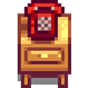

Stardew Valley
Stardew Valley is a heartwarming, open-ended country-life RPG where you leave behind the fast-paced city to start a new life on a small, inherited farm. Surrounded by the scenic beauty of the quaint Pelican Town, you’re free to shape your world as you like, from restoring your family’s overgrown fields to forging friendships with the friendly, and sometimes quirky, locals. Every season brings new crops, festivals, and activities to explore, making each day unique and filled with possibilities.
Your journey begins with a small plot of land, a few basic tools, and an invitation to rediscover a slower, more meaningful way of life. With hard work and a touch of creativity, you can transform your rundown property into a thriving farmstead, brimming with fruits, vegetables, and even livestock. As you expand your farm, you’ll also learn new skills, unlock rare items, and perhaps even uncover hidden mysteries that lie beneath the surface of this peaceful valley.
But farming is only the beginning! Stardew Valley offers a multitude of ways to spend your days. Delve into the depths of the local mine, where treasures – and dangers – await. Fish in tranquil rivers and the sparkling ocean, catch seasonal fish, and forage for wild resources that change with the weather. Connect with townsfolk, each with their own stories, personalities, and dreams. Whether you join them at the lively Flower Dance, participate in the Stardew Valley Fair, or simply visit for a friendly chat, every interaction deepens your connection to this enchanting world.
As your relationships grow, you may find love, start a family, and become a true member of the community. For those seeking a sense of calm, creativity, and adventure, Stardew Valley provides a wonderfully immersive escape. It’s a world that invites you to slow down, appreciate simple pleasures, and find joy in every sunrise. Welcome home to Stardew Valley – where your story is as endless as the seasons.
Raise among other Indie Gamers
Stardew Valley has captured the hearts of indie players everywhere, offering a cozy yet immersive world that feels like a warm escape. For fans of indie games, it stands out as a beloved gem—created by a single developer, ConcernedApe, who poured years of passion into every pixel, mechanic, and storyline. This dedication shines through, and it’s a big part of why so many of us in the indie gaming community connect with Stardew Valley on such a personal level.
Beyond its addictive farming and crafting, Stardew Valley resonates with players because it goes deeper than gameplay—it’s a heartfelt experience. There’s a sense of calm and simplicity that lets players truly relax, yet the game’s layers of depth and discovery keep us coming back season after season. With its charming 16-bit style, rich storytelling, and open-ended freedom, it represents everything we love about indie games: creativity, authenticity, and the courage to try something different.
In the years since its release, Stardew Valley has become a staple for indie gamers and a testament to the power of community support. Its multiplayer mode brought friends together to farm and explore, building an even tighter-knit community around the game. Many of us find ourselves recommending Stardew Valley to anyone looking for a wholesome adventure or an entry point into indie gaming—it’s a classic that feels personal and timeless.
If you love games that are crafted with care, designed to bring a sense of peace, and created by a developer who truly understands their players, Stardew Valley is for you. Like so many of us, you might just find yourself spending hours in Pelican Town, making memories and building your own little world. For indie players, Stardew Valley isn’t just a game—it’s an experience, a community, and a place that feels like home.
Discover Stardew Valley - it's a must!
Nowadays, we all know that the prices of some games tend to keep pace with the rapid inflation we're facing...
Even so, it’s important to appreciate the individual work of indie developers, as their efforts are reflected in the prices we should pay to play.
At first glance, Stardew Valley might seem like a common game, easily comparable to other pixel art gems like Terraria, Minecraft, or Undertale.
However, delving deeper reveals a world brimming with secrets, reminiscent of classic RPGs where exploration is key. Developed by Eric Barone, this game hides a treasure trove of experiences. Each character contributes significantly to the community of Pelican Town, akin to collecting power-ups in your favorite 8-bit adventure, but they also impact the broader realms you can discover along the way, reminiscent of an open-world quest filled with hidden Easter eggs and secrets waiting to be unlocked.
Compatible? We should be... checking!
Stardew Valley now also features a Multiplayer update on...
November 8, 2024
 Windows,
Mac,
Linux (€13.99)
Windows,
Mac,
Linux (€13.99)
November 4, 2024
Xbox (included in Game Pass ~ or $14.99)
November 4, 2024
PS4 ($14.99)
November 4, 2024
& Nintendo... Switch :) ($14.99)
The game has also been ported to
November 4, 2024

iOS ($4.99)
and
Android ($4.99)
 Sunet activat!
Sunet activat!